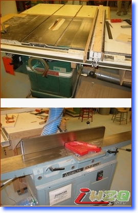

专业木质棋盘制作流程
#1 专业木质棋盘制作流程 作者：清平乐 发表时间：2007-8-4 9:11:47
专业木质棋盘制作流程
几年前，自己曾一时心血来潮动手自制过两个棋盘，一个是木质的，一个竹制的（两个菜板拼的），木质那个到现在还是半成品，竹菜板那个送人了，也不是很好。虽然成果不算喜人，终归是积累了一些经验，当年用于制作的的一些资料还一直存在电脑里，现在整理出来供DIY爱好者参考。
做棋盘首要的是选材
要做棋盘，第一步当然是选材，可以做棋盘的材料有很多，石头，金属，玻璃，塑料，纸板，木头等等，石头棋盘大多是刻在石桌上的，金属玻璃的不多见，但也是可以实现的，塑料棋盘多是塑料纸棋盘，纸板制作简单，不够专业，最专业最正统的棋盘材料自然是木材。
木材可以到木材市场购买，在选择时第一要看木材的规格是否符合自己做盘的需要，当然你一般不可能买到宽度达到棋盘要求的板子，只要保证厚度合适，后面我们会用到拼合技术。二要了解所选木材的干燥程度，干燥木材制作的棋盘不易走形，有条件的可用仪器测量木材的含水率，最好别超过20%，低于20%的才称得上是干料。如果买不到干燥的木材，那就很麻烦了，你需要多加一道程序----干燥。干燥除了自然干燥还有设备干燥，自然干燥要等几年，设备干燥对太厚的板子作用也不明显。
有了合适的木材，我们就可以着手制作棋盘了
首先介绍一下可能用到的工具
1、刨子或者电锯

/*760*90，创建于2012-2-9*/ var cpro_id = 'u761865';
#2 Re:专业木质棋盘制作流程 作者：极地剑客 发表时间：2007-9-19 15:33:37
酷!可以做个棋台了~哇哈哈~